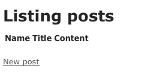

Este Guia é baseado no Rails 2.3. Alguns dos códigos mostrados aqui não funcionarão em versões antigas do Rails.
1 Este Guia Assume
Este guia é designado para principiantes que querem iniciar com uma aplicação Rails do zero. Ele não supõe que você tenha alguma experiência anterior com Rails. Entretanto, para obter o máximo dele, você precisa ter alguns pré-requisitos instalados:
- A linguagem Ruby
- O sistema de pacotes RubyGems
- Uma instalação em funcionamento do SQLite (preferencialmente), MySQL, ou PostgreSQL
É extremamente recomendado que você se familiarize com o Ruby antes de mergulhar no Rails. Você achará muito mais fácil seguir o que está acontecendo com uma aplicação Rails se entender a sintaxe básica do Ruby. O Rails não irá revolucionar magicamente o modo como você escreve aplicações web se você não tiver experiência com a linguagem que ele utiliza. Existem alguns bons recursos grátis na Internet para aprender Ruby, incluindo:
2 O que é o Rails?
O Rails é um framework de desenvolvimento web escrito na linguagem Ruby. Ele é designado para tornar a programação de aplicações web mais fácil, fazendo várias suposições sobre o que cada desenvolvedor precisa para começar. Ele permite que você escreva menos código enquanto faz mais que muitas outras linguagens e frameworks. Desenvolvedores Rails mais experientes também dizem que ele torna o desenvolvimento de aplicações web mais divertido.
O Rails é um software com opinião. Isto é, ele supõe que existe um modo melhor para fazer as coisas, e ele é desenhado para encorajar este modo – e em alguns casos desencorajando alternativas. Se você aprender “O Modo Rails” vai provavelmente descobrir um aumento tremendo de produtividade. Se persistir em trazer velhos hábitos das outras linguages para o desenvolvimento Rails, tentando usar padrões que aprendeu em outros lugares, você pode ter uma experiência menos divertida.
A filosifia Rails inclui diversos princípios guia:
- DRY – “Don’t Repeat Yourself” – sugere que escrever o mesmo código várias vezes é uma coisa ruim.
- Convenção ao invés de Configuração – significa que o Rails faz suposições sobre o que você quer fazer e como você estará fazendo isto, em vez de deixá-lo mudar cada minúscula coisa através de intermináveis arquivos de configuração.
- REST é o melhor modelo para aplicações web – organizar sua aplicação em torno de recursos e verbos HTTP padrão é o modo mais rápido para proceder.
2.1 A Arquitetura MVC
O Rails é organizado usando a arquitetura Model, View e Controller, normalmente chamada apenas de MVC. Os benefícios do MVC incluem:
- Isolação entre a lógica de negócios e a interface de usuário
- Facilidade de manter o código DRY
- Manter claro onde tipos de código diferentes pertencem para facilitar a manutenção
2.1.1 Models
Um model representa a informação (dados) da aplicação e as regras para manipular estes dados. No caso do Rails, models são usados primariamente para gerenciar as regras de interação com uma tabela correspondente no banco de dados. Na maioria dos casos, uma tabela de seu banco de dados corresponderá a um model em sua aplicação. A maior parte da lógica de negócio de sua aplicação estará concentrado nos models.
2.1.2 Views
Views representam a interface de usuário na sua aplicação. No Rails, as views são freqüentemente arquivos HTML com código Ruby embutido que efetua tarefas relacionadas somente com a apresentação dos dados. As views gerenciam o trabalho de fornecer dados para o navegador web ou outro acessório que é usado para enviar requisições à sua aplicação.
2.1.3 Controllers
Controllers fornecem a “cola” entre modelos e views. No Rails, controllers são responsáveis por processar as requisições que chegam do navegador web, interrogando os models pelos dados, e passando os dados para as views fazerem a apresentação.
2.2 Os Componentes do Rails
O Rails fornece uma pilha completa de componentes para criação de aplicações web, incluindo:
- Action Controller
- Action View
- Active Record
- Action Mailer
- Active Resource
- Railties
- Active Support
2.2.1 Action Controller
Action Controller é o componente que gerencia os controllers em uma aplicação Rais. O framework Action Controller processa as requisições que chegam para uma aplicação Rails, extrai os parâmetros, e despacha elas para a ação pretendida. Serviços fornecidos pelo Action Controller incluem gerenciamento de sessão, renderização de template, e gerenciamento de redirecionamento.
2.2.2 Action View
Action View gerencia as views de sua aplicação Rails. Ele pode criar ambas saídas HTML e XML por padrão. Action View gerencia a renderização de templates, incluindo templates aninhados e parciais, e inclui suporte embutido para AJAX.
2.2.3 Active Record
Active Record é a base para os models em uma aplicação Rails. Ele fornece independência de banco de dados, funcionalidade CRUD básica, capacidade de buscas avançadas, e a habilidade de relacionamento entre models, dentre outros serviços.
2.2.4 Action Mailer
Action Mailer é o framework para criação de serviços de e-mail. Você pode usar o Action Mailer para enviar e-mails baseados em templates flexíveis, ou para receber e processar um e-mail.
2.2.5 Active Resource
Active Resource fornece um framework para gerenciamento de conexão entre objetos de negócio e serviços web RESTful. Ele implementa um método para mapear recursos baseados em web para objetos locais com semântica CRUD.
2.2.6 Railties
Railties é o núcleo do código Rails que constrói novas aplicações Rails e cola os vários frameworks juntos em qualquer aplicação Rails.
2.2.7 Active Support
Active Support é uma coleção extensiva de classes utilitárias e extensões da biblioteca padrão do Ruby que são usadas no Rails, tanto pelo código do núcleo quanto pelas suas aplicações.
2.3 REST
A base da arquitetura RESTful é geralmente considerada como a tese de doutorado de Roy Fielding, Architectural Styles and the Design of Network-based Software Architectures. Felizmente, você não precisa ler este documento inteiro para entender como o REST funciona no Rails. REST, um acrônimo para Representational State Transfer, resume-se em dois princípios essenciais para nossos propósitos:
- Usar identificadores de recursos (os quais, para o propósito da discussão, você pode pensar como as URLs) para representar os recursos
- Transferir as representações de estado desse recurso entre os componentes do sistema.
Por exemplo, para uma aplicação Rails uma requisição como esta:
DELETE /photos/17
seria entendida para referenciar o recurso photo com o ID de 17, e para indicar a ação desejada – deletando este recurso. REST é um estilo natural para a arquitetura de aplicações web, e o Rails o faz ainda mais natural usando convenções para proteger você de algumas complexidades do RESTful.
Se você quiser mais detalhes sobre REST como um estilo arquitetural, estes recursos são mais simples que a tese de Fielding:
- A Brief Introduction to REST por Stefan Tilkov
- An Introduction to REST (tutorial em vídeo) por Joe Gregorio
- Representational State Transfer artigo na Wikipedia
3 Criando um Novo Projeto Rails
Se você seguir este guia, criará um projeto Rails chamado blog, um (muito) simples weblog. Antes de iniciar a construção da aplicação, você precisa ter certeza de que tem o Rails instalado.
3.1 Instalando o Rails
Na maioria dos casos, a maneira mais fácil para instalar o Rails é obter vantagem do RubyGems:
$ gem install rails
Existem algumas circunstâncias especiais nas quais você poderia querer usar uma estratégia de instalação alternativa:
- Se você está trabalhando no Windows, pode achar mais fácil instalar o Instant Rails. Esteja atento, entretanto, que as releases do Instant Rails tendem a estar seriamente atrasadas em comparação com a versão atual do Rails. Também, você verá que o desenvolvimento Rails no Windows é menos agradável que em outros sistemas operacionais. Se for possível, nós sugerimos que você instale uma máquina virtual Linux e use ela para o desenvolvimento Rails, ao invés de usar Windows.
- Se você quer manter-se atualizado com as últimas atualizações do Rails, você poderá clonar o código fonte do Rails a partir do github. Entretanto, isto não é recomendado como uma opção para iniciantes.
3.2 Criando a Aplicação de Blog
Abra um terminal, navegue para um diretório onde você tem direitos para criar arquivos, e digite:
$ rails blog
Isto irá criar uma aplicação Rails que usa o banco de dados SQLite para armazenamento. Se você preferir usar o MySQL, execute este comando ao invés:
$ rails blog -d mysql
E se você está usando PostgreSQL para armazenamento de dados, execute este comando:
$ rails blog -d postgresql
Você pode ver todas as opções que o construtor de aplicação do Rails aceita rodando rails -h.
Após criar a aplicação de blog, mude para a sua pasta para continuar trabalhando diretamente na aplicação:
$ cd blog
Em qualquer caso, o Rails irá criar uma pasta no seu diretório de trabalho atual chamada blog. Abra esta pasta e explore seu conteúdo. A maioria do trabalho deste tutorial acontecerá no diretório app/, mas aqui está uma pequena descrição da função de cada pasta que o Rails cria em uma nova aplicação por padrão:
| Arquivo/Diretório | Propósito |
|---|---|
| README | Este é um breve manual de instrução para sua aplicação. Use ele para explicar à outros o que sua aplicação faz, como configurá-la, etc. |
| Rakefile | Este arquivo contém tarefas em lote que podem ser executadas do terminal. |
| app/ | Contém os controllers, models, e views para sua aplicação. Você irá focar neste diretório para o restante deste guia. |
| config/ | Configure suas regras de execução para a aplicação, rotas, banco de dados, e mais. |
| db/ | Exibe o seu schema de banco de dados atual, bem como as migrações de banco de dados. Você aprenderá sobre migrações em breve. |
| doc/ | Documentação completa para sua aplicação. |
| lib/ | Módulos de extensão para sua aplicação (não explicados neste guia). |
| log/ | Arquivos de log da aplicação. |
| public/ | A única pasta vista pelo mundo como ela é. Aqui é onde suas imagens, javascript, stylesheets(CSS), e outros arquivos estáticos ficam. |
| script/ | Scripts fornecidos pelo Rails para fazer tarefas repetitivas, tais como benchmarking, instalação de plugins, e iniciar o console ou o servidor web. |
| test/ | Testes unitários, fixtures, e outros aparatos de teste. Estes são tratados em Testando Aplicações Rails. |
| tmp/ | Arquivos temporários. |
| vendor/ | Um local para código de terceiros. Em uma aplicação Rails típica, isto inclui Ruby Gems, o código fonte do Rails (se você instalá-lo no seu projeto) e plugins contendo funcionalidades adicionais. |
3.3 Configurando um Banco de Dados
Quase todas as aplicações Rails vão interagir com um banco de dados. O banco de dados a ser usado é especificado em um arquivo de configuração, config/database.yml. Se você abrir este arquivo em uma nova aplicação Rails, você verá uma configuração padrão para o banco de dados SQLite. O arquivo contém seções para três ambientes diferentes nos quais o Rails pode rodar por padrão:
- O ambiente development (desenvolvimento) é usado em seu próprio computador enquanto você interage manualmente com a aplicação
- O ambiente test (teste) é usado para rodar testes automatizados
- O ambiente production (produção) é usado quando você libera sua aplicação para o mundo utilizar.
3.3.1 Configurando um Banco de Dados SQLite
O Rails vem com suporte padrão para o SQLite, que é uma aplicação de banco de dados bastante leve e sem servidor. Enquanto um ambiente de produção ativo pode sobrecarregar o SQLite, ele trabalha bem para desenvolvimento e teste. O Rails usa por padrão o SQLite quando um novo projeto é criado, mas você pode sempre modificar isso mais tarde.
Aqui está a seção do arquivo de configuração padrão com informação de conexão para o ambiente de desenvolvimento:
development:
adapter: sqlite3
database: db/development.sqlite3
pool: 5
timeout: 5000
Se você não tem nenhum banco de dados configurado, o SQLite é o mais fácil para instalar. Se você está usando OS X 10.5 ou superior em um Mac, você já tem ele. Caso contrário, pode instalá-lo através do RubyGems:
$ gem install sqlite3-ruby
3.3.2 Configurando um Banco de Dados MySQL
Se você escolher usar o MySQL, seu config/database.yml parecerá um pouco diferente. Aqui está a seção de desenvolvimento:
development:
adapter: mysql
encoding: utf8
database: blog_development
pool: 5
username: root
password:
socket: /tmp/mysql.sock
Se a instalação do MySQL em seu computador de desenvolvimento inclui um usuário root com uma senha em branco, essa configuração deve funcionar para você. Caso contrário, altere o usuário (username) e a senha (password) na seção development como for adequado.
3.3.3 Configurando um Banco de Dados PostgreSQL
Se você escolher usar o PostgreSQL, seu config/database.yml será customizado para usar bancos de dados PostgreSQL:
development:
adapter: postgresql
encoding: unicode
database: blog_development
pool: 5
username: blog
password:
Altere o usuário (username) e a senha (password) na seção development conforme necessário.
3.4 Criando o Banco de Dados
Agora que você tem seu banco de dados configurado, é hora de deixar o Rails criar um banco de dados vazio para você. Você pode fazer isto executando um comando rake:
$ rake db:create
O Rake é um executador de comandos genérico que o Rails usa para diversas coisas. Você pode ver uma lista dos comandos rake disponíveis em sua aplicação executando rake -T.
4 Hello, Rails!
Um dos meios tradicionais para se iniciar com uma nova linguagem é mostrando algum texto na tela rapidamente. Para fazer isto em Rails, você precisa criar no mínimo um controller e uma view. Felizmente, você pode fazer isso em um único comando. Entre com este comando no seu terminal:
$ script/generate controller home index
Se você está no Windows, ou seu Ruby está configurado de algum modo não-padrão, você pode precisar passar explicitamente os comandos script do Rails para o Ruby: ruby script/generate controller home index.
O Rails criará vários arquivos para você, incluindo app/views/home/index.html.erb. Este é o template que será usado para mostrar os resultados da ação (método) index no controller home. Abra este arquivo no seu editor de texto e altere-o para conter uma única linha de código:
<h1>Hello, Rails!</h1>
4.1 Iniciando o Servidor Web
Na verdade você já tem uma aplicação Rails funcional – depois de executar apenas dois comandos! Para vê-la, você precisa iniciar o servidor web em sua máquina de desenvolvimento. Você pode fazer isto executando outro comando:
$ script/server
Isto irá iniciar uma instância do servidor web Mongrel por padrão (O Rails também pode usar vários outros servidores web). Para ver sua aplicação em ação, abra uma janela do navegador e vá para http://localhost:3000. Você deve ver a página de informação padrão do Rails:

Para parar o servidor web, aperte Ctrl+C na janela do terminal onde ele está rodando. No modo de desenvolvimento, o Rails geralmente não precisa que você pare o servidor; as alterações que você faz nos arquivos serão automaticamente atualizadas pelo servidor.
A página “Welcome Aboard” é o teste de fumaça para uma nova aplicação Rails: ele assegura que você tem seu software configurado corretamente para servir a página. Para visualizar a página que você acabou de criar, navegue para http://localhost:3000/home/index.
4.2 Configurando a Página Inicial da Aplicação
Você provavelmente gostaria de substituir a página de “Welcome Aboard” com sua própria página inicial para a aplicação. O primeiro passo para fazer isto é excluir a página padrão de sua aplicação:
$ rm public/index.html
Agora, você deve dizer ao Rails onde sua página inicial atual está localizada. Abra o arquivo config/routes.rb em seu editor. Este é o arquivo de roteamento de sua aplicação, que armazena entradas em uma DSL (domain-specific language – linguagem de domínio específica) especial que diz ao Rails como conectar as requisições que chegam com os controllers e ações. No final do arquivo você verá as rotas padrão:
map.connect ':controller/:action/:id'
map.connect ':controller/:action/:id.:format'
As rotas padrão gerenciam requisições simples tais como /home/index: o Rails traduz esta em uma chamada para a ação index no controller home. Como outro exemplo, /posts/edit/1 executaria a ação edit do controller posts com o id de 1.
Para configurar sua página inicial, você precisa adicionar uma outra linha ao arquivo de rotas, acima das rotas padrão:
map.root :controller => "home"
Esta linha ilustra um pedacinho da abordagem de “convenção ao invés de configuração”: se você não especificar nenhuma ação, o Rails assume a ação index.
Agora se você navegar para http://localhost:3000 em seu navegador, você verá a view home/index.
Para mais informações sobre rotas, ver em Roteamento Rails de Fora para Dentro.
5 Começando e Executando Rapidamente com o Scaffolding
O scaffolding do Rails é um modo rápido para gerar algumas das partes principais de uma aplicação. Se você quer criar os models, views e controllers para um novo recurso em uma única operação, o scaffolding é a ferramenta para o trabalho.
6 Criando um Recurso
No caso de uma aplicação de blog, você pode começar gerando um recurso Post através do scaffold: isto representará um post individual no blog. Para fazer isto, execute este comando no seu terminal:
$ script/generate scaffold Post name:string title:string content:text
Enquanto o scaffold o ajudará a iniciar rapidamente, o código padrão que ele gera é improvável para servir perfeitamente para sua aplicação. Na maioria dos casos, você precisará customizar o código gerado. Muitos desenvolvedores Rails experientes evitam usar o scaffolding por completo, preferindo escrever todo ou a maior parte do seu código fonte a partir do zero.
O gerador do scaffold criará 14 arquivos em sua aplicação, ao longo de alguns diretórios, e alterar mais um. Aqui está uma rápida visão geral do que ele cria:
| Arquivo | Propósito |
|---|---|
| app/models/post.rb | O model Post |
| db/migrate/20090113124235_create_posts.rb | A migração para criar a tabela de posts em seu banco de dados. (o nome do seu arquivo terá uma data/hora diferente) |
| app/views/posts/index.html.erb | Uma view para visualizar uma listagem de todos os posts |
| app/views/posts/show.html.erb | Uma view para visualizar um único post |
| app/views/posts/new.html.erb | Uma view para criar um novo post |
| app/views/posts/edit.html.erb | Uma view para editar um post existente |
| app/views/layouts/posts.html.erb | Uma view para controlar a visualização geral das outras views de posts |
| public/stylesheets/scaffold.css | Cascading style sheet para fazer com que as views criadas pelo scaffold tenham melhor aparência |
| app/controllers/posts_controller.rb | O controller para os Posts |
| test/functional/posts_controller_test.rb | Estrutura de testes funcionais para o controller de posts |
| app/helpers/posts_helper.rb | Funções auxiliares para usar com as views de posts |
| config/routes.rb | Editado para incluir informações de roteamento para os posts |
| test/fixtures/posts.yml | Dados de Posts simulados para uso nos testes |
| test/unit/post_test.rb | Estrutura de testes unitários para o model Post |
| test/unit/helpers/posts_helper_test.rb | Estrutura de testes unitários para o helper de posts |
6.1 Rodando uma Migração
Um dos resultados do comando script/generate scaffold é uma migração de banco de dados. Migrações são classes Ruby designadas a facilitar a criação e modificação de tabelas do banco de dados. O Rails usa comandos rake para executar as migrações, e é possível voltar uma migração após ela ter sido aplicada no seu banco de dados. Os nomes de arquivo das migrações incluem a data/hora para garantir que eles serão processados na ordem em que foram criados.
Se você verificar no arquivo db/migrate/20090113124235_create_posts.rb (lembre-se, o seu arquivo terá um nome ligeiramente diferente), aqui está o que você encontrará:
class CreatePosts < ActiveRecord::Migration
def self.up
create_table :posts do |t|
t.string :name
t.string :title
t.text :content
t.timestamps
end
end
def self.down
drop_table :posts
end
end
Se você fosse traduzir em palavras, isto diz algo como: quando esta migração for executada, cria uma tabela chamada posts com duas colunas string (name e title) e uma coluna textual (content), e gere campos data/hora para rastrear registro de criação e atualização. Você pode aprender a sintaxe detalhada das migrações no guia Migrações de Banco de Dados do Rails.
Neste ponto, você pode usar um comando rake para executar a migração:
$ rake db:migrate
Lembre-se que você não pode rodar migrações antes de executar rake db:create para criar seu banco de dados, como explicado antes.
Porque você está trabalhando no ambiente de desenvolvimento por padrão, este comando será aplicado ao banco de dados definido na seção development do seu arquivo config/database.yml.
6.2 Adicionando um Link
Para ligar os posts à página inicial que você já criou, você pode adicionar um link na página inicial. Abra o /app/views/home/index.html.erb e modifique-o como abaixo:
<h1>Hello, Rails!</h1>
<%= link_to "My Blog", posts_path %>
O método link_to é um dos helpers para views embutidos no Rails. Ele cria um hyperlink baseado no texto a ser mostrado e para onde apontar – neste caso, o caminho para os posts.
6.3 Trabalhando com Posts no Navegador
Agora você está pronto para começar a trabalhar com os posts. Para fazê-lo, navegue para http://localhost:3000 e clique no link “My Blog”:

Este é o resultado do Rails renderizando a view index de seus posts. Não há nenhum post atualmente no banco de dados, mas se você clicar no link New Post pode criar um. Depois disso, você verá que pode editar posts, visualizar seus detalhes, ou excluí-los. Toda a lógica e HTML para gerenciar isto foi criado pelo simples comando script/generate scaffold.
No modo de desenvolvimento (o qual é o que você está trabalhando por padrão), o Rails recarrega sua aplicação a cada requisição, então não há necessidade de parar e reiniciar o servidor web.
Parabéns, você está montado nos trilhos! Agora é hora de ver como tudo isso funciona.
6.4 O Model
O arquivo de model, app/models/post.rb é tão simples como ele pode ser:
class Post < ActiveRecord::Base
end
Não há muito neste arquivo – mas note que a classe Post herda de ActiveRecord::Base. O Active Record fornece uma grande quantidade de funcionalidades para seus models Rails de graça, incluindo operações CRUD (Create, Read, Update, Destroy) básicas, validação de dados, bem como suporte para pesquisas sofisticadas e a capacidade de relacionar vários models com um outro.
6.5 Acrescentando Alguma Validação
O Rails inclui métodos para ajudá-lo a validar os dados que você envia para os models. Abra o arquivo app/models/post.rb e altere-o:
class Post < ActiveRecord::Base
validates_presence_of :name, :title
validates_length_of :title, :minimum => 5
end
Estas alterações garantirão que todos os posts possuem um nome e um título, e que o título possui ao menos 5 caracteres. O Rails pode validar várias condições em um model, incluindo a presença ou singularidade de colunas, seus formatos, e a existência de objetos associados.
6.6 Usando o Console
Para ver suas validações em ação, você pode usar o console. O console é uma ferramenta de linha de comando que permite que você execute código Ruby no contexto de sua aplicação:
$ script/console
Após o carregamento do console, você pode usá-lo para trabalhar com os models de sua aplicação:
>> p = Post.create(:content => "A new post")
=> #<Post id: nil, name: nil, title: nil, content: "A new post",
created_at: nil, updated_at: nil>
>> p.save
=> false
>> p.errors
=> #<ActiveRecord::Errors:0x23bcf0c @base=#<Post id: nil, name: nil,
title: nil, content: "A new post", created_at: nil, updated_at: nil>,
@errors={"name"=>["can't be blank"], "title"=>["can't be blank",
"is too short (minimum is 5 characters)"]}>
Este código mostra a criação de um nova instância de Post, a tentativa de salvá-lo e obter false como retorno (indicando que o save falhou), e a inspeção dos erros do post.
Diferente do servidor web de desenvolvimento, o console não carrega automaticamente seu código novo a cada linha. Se você modificar seus models enquanto o console está aberto, digite reload! no prompt do console para carregar as modificações.
6.7 Listando Todos os Posts
O lugar mais fácil para começar a olhar as funcionalidades é no código que lista todos os posts. Abra o arquivo app/controllers/posts_controller.rb e olhe a ação index:
def index
@posts = Post.find(:all)
respond_to do |format|
format.html # index.html.erb
format.xml { render :xml => @posts }
end
end
Este código define a variável de instância @posts como um array de todos os posts no banco de dados. Post.find(:all) ou Post.all solicita ao model Post para retornar todos os posts que estão no banco de dados atualmente, sem nenhuma condição de limite.
Para mais informações sobre busca de registros com Active Record, veja Active Record Finders.
O bloco respond_to gerencia ambas as chamadas HTML e XML para esta ação. Se você navegar para http://localhost:3000/posts.xml, verá todos os posts em formato XML. O formato HTML busca por uma view em app/views/posts/ com um nome que corresponda ao nome da ação. O Rails faz com que todas as variáveis de instância da ação estejam disponíveis para a view. Aqui está o app/view/posts/index.html.erb:
<h1>Listing posts</h1>
<table>
<tr>
<th>Name</th>
<th>Title</th>
<th>Content</th>
</tr>
<% for post in @posts %>
<tr>
<td><%=h post.name %></td>
<td><%=h post.title %></td>
<td><%=h post.content %></td>
<td><%= link_to 'Show', post %></td>
<td><%= link_to 'Edit', edit_post_path(post) %></td>
<td><%= link_to 'Destroy', post, :confirm => 'Are you sure?',
:method => :delete %></td>
</tr>
<% end %>
</table>
<br />
<%= link_to 'New post', new_post_path %>
Esta view itera sobre o conteúdo do array de @posts para exibir conteúdo e links. Algumas coisas a serem notadas na view:
- h é um método helper do Rails para sanitizar os dados exibidos, prevenindo ataques cross-site scripting
- link_to constrói um hyperlink para um destino específico
- edit_post_path é um helper que o Rails fornece como parte do roteamento RESTful. Você verá uma variedade destes helpers para ações diferentes que o controller possui.
Para maiores detalhes sobre o processo de renderização, veja Layouts e Renderização no Rails.
6.8 Customizando o Layout
A view é apenas parte da história de como o HTML é exibido no seu navegador web. O Rails também tem o conceito de layouts, que são containers para as views. Quando o Rails renderiza uma view para o navegador, ele faz isso colocando o HTML da view dentro de um HTML de layout. O comando script/generate scaffold criou automaticamente um layout padrão para os posts, app/views/layouts/posts.html.erb. Abra este layout no seu editor e altere a tag body:
<!DOCTYPE html PUBLIC "-//W3C//DTD XHTML 1.0 Transitional//EN"
"http://www.w3.org/TR/xhtml1/DTD/xhtml1-transitional.dtd">
<html xmlns="http://www.w3.org/1999/xhtml" xml:lang="en" lang="en">
<head>
<meta http-equiv="content-type"
content="text/html;charset=UTF-8" />
<title>Posts: <%= controller.action_name %></title>
<%= stylesheet_link_tag 'scaffold' %>
</head>
<body style="background: #EEEEEE;">
<p style="color: green"><%= flash[:notice] %></p>
<%= yield %>
</body>
</html>
Agora quando você atualizar a página /posts, verá um fundo cinza na página. Este mesmo fundo cinza será usado por todas as views de posts.
6.9 Criando Novos Posts
Criar um novo post envolve duas ações. A primeira é a ação new, que instancia um objeto Post vazio:
def new
@post = Post.new
respond_to do |format|
format.html # new.html.erb
format.xml { render :xml => @post }
end
end
A view new.html.erb exibe este Post vazio para o usuário:
<h1>New post</h1>
<% form_for(@post) do |f| %>
<%= f.error_messages %>
<p>
<%= f.label :name %><br />
<%= f.text_field :name %>
</p>
<p>
<%= f.label :title %><br />
<%= f.text_field :title %>
</p>
<p>
<%= f.label :content %><br />
<%= f.text_area :content %>
</p>
<p>
<%= f.submit "Create" %>
</p>
<% end %>
<%= link_to 'Back', posts_path %>
O bloco form_for é usado para criar um formulário HTML. Dentro deste bloco, você tem acesso a métodos para construir vários controles no form. Por exemplo, f.text_field :name diz para o Rails criar um input de texto no formulário, e para configurá-lo com o atributo name da instância sendo exibida. Você só pode usar estes métodos com atributos do model no qual o formulário é baseado (neste caso name, title e content). O Rails prefere a utilização de form_for em vez de ter você escrevendo HTML a mão porque o código é mais sucinto, e porque ele explicitamente liga o formulário a uma instância de model específica.
Se você precisa criar um formulário HTML que exibe campos arbitrários, não ligados a um model, você deve usar o método form_tag, que fornece atalhos para construir formulários que não são necessariamente amarrados com uma instância de model.
Quando o usuário clica no botão Create deste formulário, o navegador enviará a informação de volta para o método create do controller (o Rails sabe que deve chamar o método create porque o formulário foi enviado com uma requisição HTTP POST; esta á uma das convenções que eu mencionei anteriomente):
def create
@post = Post.new(params[:post])
respond_to do |format|
if @post.save
flash[:notice] = 'Post was successfully created.'
format.html { redirect_to(@post) }
format.xml { render :xml => @post, :status => :created,
:location => @post }
else
format.html { render :action => "new" }
format.xml { render :xml => @post.errors,
:status => :unprocessable_entity }
end
end
end
A ação create instancia um novo objeto Post a partir dos dados fornecidos pelo usuário no formulário, que o Rails torna disponível no hash params. Após salvar o novo post, ele usa flash[:notice] para criar uma mensagem de informação para o usuário, e redireciona para a ação show do post. Se ocorrerem quaisquer problemas, a ação create somente mostra a view new uma segunda vez, com quaisquer mensagens de erro.
O Rais fornece o hash flash (normalmente chamado somente de Flash) para que as mensagens possam ser transferidas para uma outra ação, proporcionando ao usuário informações úteis sobre o status da sua requisição. No caso do create, o usuário na verdade nunca verá nenhuma página renderizada durante o processo de criação do Post, porque ele redireciona imediatamente para o novo Post assim que o Rails salva o registro. O Flash transporta a mensagem para a próxima ação, de modo que quando usuário é redirecionado de volta para a ação show, ele é presenteado com uma mensagem dizendo “Post was successfully created.”
6.10 Exibindo um Post Individual
Quando você clica no link show para um post na página index, ele o levará para uma URL como http://localhost:3000/posts/1. O Rails interpreta isto como uma chamada a ação show do recurso, e passa o 1 como o parâmetro :id. Aqui está a ação show:
def show
@post = Post.find(params[:id])
respond_to do |format|
format.html # show.html.erb
format.xml { render :xml => @post }
end
end
A ação show usa Post.find para pesquisar por um único registro no banco de dados através do seu id. Apés encontrar o registro, o Rails o exibe usando o show.html.erb:
<p>
<b>Name:</b>
<%=h @post.name %>
</p>
<p>
<b>Title:</b>
<%=h @post.title %>
</p>
<p>
<b>Content:</b>
<%=h @post.content %>
</p>
<%= link_to 'Edit', edit_post_path(@post) %> |
<%= link_to 'Back', posts_path %>
6.11 Editando Posts
Assim como criar um novo post, editar um post é um processo em duas partes. O primeiro passo é uma requisiçao para edit_post_path(@post) com um post específico. Isto chama a ação edit no controller:
def edit
@post = Post.find(params[:id])
end
Após encontrar o post solicitado, O Rails usa a view edit.html.erb para exibí-lo:
<h1>Editing post</h1>
<% form_for(@post) do |f| %>
<%= f.error_messages %>
<p>
<%= f.label :name %><br />
<%= f.text_field :name %>
</p>
<p>
<%= f.label :title %><br />
<%= f.text_field :title %>
</p>
<p>
<%= f.label :content %><br />
<%= f.text_area :content %>
</p>
<p>
<%= f.submit "Update" %>
</p>
<% end %>
<%= link_to 'Show', @post %> |
<%= link_to 'Back', posts_path %>
Enviando o formulário criado por esta view invocará a ação update dentro do controller:
def update
@post = Post.find(params[:id])
respond_to do |format|
if @post.update_attributes(params[:post])
flash[:notice] = 'Post was successfully updated.'
format.html { redirect_to(@post) }
format.xml { head :ok }
else
format.html { render :action => "edit" }
format.xml { render :xml => @post.errors,
:status => :unprocessable_entity }
end
end
end
Na ação update, o Rails primeiro utiliza o parâmetro :id passado através da view edit para localizar o registro que está sendo editado. Então a chamada ao update_attributes recebe o restante dos parâmetros da requisição e os aplica ao registro. Se tudo correr bem, o usuário é redirecionado a view show do post. Se ocorrerem quaisquer problemas, ele volta ao edit para corrigí-los.
Leitores com olhos afiados perceberão que a declaração form_for é idêntica para as vies new e edit. O Rails gera código diferente para os dois formulários porque ele é esperto o bastante para perceber que em um caso está sendo passado um novo registro que nunca foi salvo, e no outro caso um registro existente que já está salvo no banco de dados. Em uma aplicação Rails em produção, você normalmente eliminaria esta duplicação movendo o código similar para um partial template, que poderia então ser incluído em ambos os templates principais. Mas o gerador do scaffold não tenta fazer suposições demais, e gera código que é fácil de modificar se você quer formulários diferentes para create e edit.
6.12 Destruindo um Post
Finalmente, clicar em um dos links destroy envia o id associado para a ação destroy:
def destroy
@post = Post.find(params[:id])
@post.destroy
respond_to do |format|
format.html { redirect_to(posts_url) }
format.xml { head :ok }
end
end
O método destroy de uma instância do Active Record remove o registro correspondente do banco de dados. Após isto ser feito, não existe nenhum registro para exibir, então o Rails redireciona o navegador para a view index.
7 Mantendo o Código DRY
Neste ponto, vale a pena olhar algumas das ferramentas que o Rais fornece para elimitar duplicação no seu código. Em especial, você pode usar partials para limpar a duplicação nas views e filters para ajudar com a duplicação nos controllers.
7.1 Usando Partials para Eliminar Duplicação nas Views
Como você viu anteriormente, as views geradas pelo scaffold para as ações new e edit são bastante semelhantes. Você pode separar o código compartilhado em um template partial. Isto requer a edição das vies new e edit, e a adição de um novo template. O novo template _form.html.erb deve ser salvo na mesma pasta app/views/posts como os arquivos do qual ele está sendo extraído. Note que o nome deste arquivo começa com um underscore; esta é a convenção de nomenclatura do Rails para templates partial.
new.html.erb:
<h1>New post</h1>
<%= render :partial => "form" %>
<%= link_to 'Back', posts_path %>
edit.html.erb:
<h1>Editing post</h1>
<%= render :partial => "form" %>
<%= link_to 'Show', @post %> |
<%= link_to 'Back', posts_path %>
_form.html.erb:
<% form_for(@post) do |f| %>
<%= f.error_messages %>
<p>
<%= f.label :name %><br />
<%= f.text_field :name %>
</p>
<p>
<%= f.label :title, "title" %><br />
<%= f.text_field :title %>
</p>
<p>
<%= f.label :content %><br />
<%= f.text_area :content %>
</p>
<p>
<%= f.submit "Save" %>
</p>
<% end %>
Agora, quando o Rails renderizar a view new ou edit, ele irá inserir o partial _form no ponto indicado. Note a convenção de nomenclatura para partials: se você referir-se a um partial nomeado form dentro de uma view, o arquivo correspondente é _form.html.erb, com um underscore na frente.
Para obter maiores informações sobre partials, consulte o guia Layouts e Renderização no Rails.
7.2 Usando Filters para Eliminar Duplicação no Controller
Neste ponto, se você olhar o controller de posts, verá alguma duplicação:
class PostsController < ApplicationController
# ...
def show
@post = Post.find(params[:id])
# ...
end
def edit
@post = Post.find(params[:id])
end
def update
@post = Post.find(params[:id])
# ...
end
def destroy
@post = Post.find(params[:id])
# ...
end
end
Quatro casos da exata mesma linha de código não parecem muito DRY. O Rails fornece filters como uma maneira de melhorar este tipo de código repetido. Neste caso, você pode melhorar as coisas usando um before_filter:
class PostsController < ApplicationController
before_filter :find_post,
:only => [:show, :edit, :update, :destroy]
# ...
def show
# ...
end
def edit
end
def update
# ...
end
def destroy
# ...
end
private
def find_post
@post = Post.find(params[:id])
end
end
O Rails executa os before filters antes de qualquer ação no controller. Você pode usar a cláusula :only para restringir o before filter apenas para determinadas ações, ou uma cláusula :except para especificamente pular um before filter em certas ações. O Rails também permite que você defina after filters que executam depois do processamento de uma ação, bem como around filters que envolvem o processamento de ações. Filters podem ser definidos também em classes externas para facilitar seu compartilhamento entre controllers.
Para obter mais informações sobre filters, veja o guia Visão Geral do Action Controller.
8 Adicionando um Segundo Model
Agora que você já viu o que há em um model construído com scaffolding, é hora de adicionar um segundo model a aplicação. O segundo model irá gerenciar comentários nos posts do blog.
8.1 Gerando um Model
Models no Rails utilizam um nome no singular, e suas tabelas correspondentes no banco de dados usam nomes no plural. Para o model que gerencia os comentários, a convenção é usar o nome Comment. Mesmo se você não quiser usar toda a estrutura gerada pelo scaffolding, a maioria dos desenvolvedores Rails ainda usa geradores para criar coisas como models e controllers. Para criar um novo model, execute este comando no seu terminal:
$ script/generate model Comment commenter:string body:text
post:references
Este comando irá gerar quatro arquivos:
- app/models/comment.rb – O model
- db/migrate/20091013214407_create_comments.rb – A migração
- test/unit/comment_test.rb e test/fixtures/comments.yml – A estrutura de testes.
Primeiro, dê uma olhada no comment.rb:
class Comment < ActiveRecord::Base
belongs_to :post
end
Este é muito similar ao model post.rb que você viu anteriormente. A diferença é a linha belongs_to :post, que configura uma associação Active Record. Você aprenderá um pouco mais sobre associações na próxima seção deste guia.
Além do model, o Rails também gerou uma migração para criar a tabela de banco de dados correspondente:
class CreateComments < ActiveRecord::Migration
def self.up
create_table :comments do |t|
t.string :commenter
t.text :body
t.references :post
t.timestamps
end
end
def self.down
drop_table :comments
end
end
A linha t.references define uma coluna de chave estrangeira para a associação entre os dois models. Vá em frente e execute a migração:
$ rake db:migrate
O Rails é esperto o bastante para executar somente as migrações que ainda não tiverem sido executadas na base de dados atual.
8.2 Associando Models
As associações do Active Record permitem que você declare facilmente o relacionamento entre dois models. No caso de comentários e posts, você poderia escrever as relações desta forma:
- Cada comentário pertence a um post
- Um post pode ter muitos comentários
Na verdade, isto é bastante parecido com a sintaxe que o Rails utiliza para declarar esta associação. Você já viu a linha de código dentro do model Comment que faz cada comentário pertencer a um Post:
class Comment < ActiveRecord::Base
belongs_to :post
end
Você precisará editar o arquivo post.rb para adicionar o outro lado da associação:
class Post < ActiveRecord::Base
validates_presence_of :name, :title
validates_length_of :title, :minimum => 5
has_many :comments
end
Estas duas declarações habilitam uma boa porção de comportamento automático. Por exemplo, se você tem uma variável de instância @post contendo um post, você pode recuperar todos os comentários que pertencem a este post como o array @post.comments.
Para obter mais informações sobre associações do Active Record, consulta o guia Associações do Active Record.
8.3 Adicionando uma Rota
Rotas são entradas no arquivo config/routes.rb que dizem ao Rails como mapear as requisições HTTP que chegam para ações dos controllers. Abra este arquivo e encontre a linha existente que se refere aos posts (ela estará bem no topo do arquivo). Então edite-a como segue:
map.resources :posts, :has_many => :comments
Isto cria comments como um recurso aninhado dentro de posts. Esta é outra parte de capturar a relação hierárquica que existe entre posts e comentários.
Para obter mais informações sobre roteamento, veja o guia Roteamento Rails de Fora para Dentro.
8.4 Gerando um Controller
Com o model em mãos, você pode focar sua atenção para criar um controller correspondente. Novamente, existe um gerador para isto:
$ script/generate controller Comments index show new edit
Isto cria sete arquivos:
- app/controllers/comments_controller.rb – O controller
- app/helpers/comments_helper.rb – Um arquivo de helper para a view
- app/views/comments/index.html.erb – A view para a ação index
- app/views/comments/show.html.erb – A view para a ação show
- app/views/comments/new.html.erb – A view para a ação new
- app/views/comments/edit.html.erb – A view para a ação edit
- test/functional/comments_controller_test.rb – Os testes funcionais para o controller
O controller será gerado com métodos vazios e views para cada ação que você especificou na chamada ao script/generate controller:
class CommentsController < ApplicationController
def index
end
def show
end
def new
end
def edit
end
end
Você precisará preencher isto com código que efetivamente processe as requisições de maneira apropriada em cada método. Aqui está uma versão que (pelo bem da simplicidade) responde a requisições que requerem HTML:
class CommentsController < ApplicationController
def index
@post = Post.find(params[:post_id])
@comments = @post.comments
end
def show
@post = Post.find(params[:post_id])
@comment = @post.comments.find(params[:id])
end
def new
@post = Post.find(params[:post_id])
@comment = @post.comments.build
end
def create
@post = Post.find(params[:post_id])
@comment = @post.comments.build(params[:comment])
if @comment.save
redirect_to post_comment_url(@post, @comment)
else
render :action => "new"
end
end
def edit
@post = Post.find(params[:post_id])
@comment = @post.comments.find(params[:id])
end
def update
@post = Post.find(params[:post_id])
@comment = Comment.find(params[:id])
if @comment.update_attributes(params[:comment])
redirect_to post_comment_url(@post, @comment)
else
render :action => "edit"
end
end
def destroy
@post = Post.find(params[:post_id])
@comment = Comment.find(params[:id])
@comment.destroy
respond_to do |format|
format.html { redirect_to post_comments_path(@post) }
format.xml { head :ok }
end
end
end
Você verá um pouco mais de complexidade aqui do que viu no controller de posts. Este é um efeito colateral do aninhamento que você definiu: cada requisição para um comentário precisa saber o post ao qual o comentário está anexado.
Além disso, o código tira vantagem de alguns métodos disponíveis para uma associação. Por exemplo, no método new, ele chama
@comment = @post.comments.build
Isto cria um novo objeto Comment e configura o campo post_id para ter o id do objeto Post especificado em uma única operação.
8.5 Construindo Views
Porque você pulou o scaffolding, você precisará construir as views para os comentários “a mão”. Invocar script/generate controller lhe dará views esqueleto, mas elas estarão desprovidos de conteúdo real. Aqui está um primeiro passo para aperfeiçoar as views de comentários.
A view views/comments/index.html.erb:
<h1>Comments for <%= @post.title %></h1>
<table>
<tr>
<th>Commenter</th>
<th>Body</th>
</tr>
<% for comment in @comments %>
<tr>
<td><%=h comment.commenter %></td>
<td><%=h comment.body %></td>
<td><%= link_to 'Show', post_comment_path(@post, comment) %></td>
<td>
<%= link_to 'Edit', edit_post_comment_path(@post, comment) %>
</td>
<td>
<%= link_to 'Destroy', post_comment_path(@post, comment),
:confirm => 'Are you sure?', :method => :delete %>
</td>
</tr>
<% end %>
</table>
<br />
<%= link_to 'New comment', new_post_comment_path(@post) %>
<%= link_to 'Back to Post', @post %>
A view views/comments/new.html.erb:
<h1>New comment</h1>
<% form_for([@post, @comment]) do |f| %>
<%= f.error_messages %>
<p>
<%= f.label :commenter %><br />
<%= f.text_field :commenter %>
</p>
<p>
<%= f.label :body %><br />
<%= f.text_area :body %>
</p>
<p>
<%= f.submit "Create" %>
</p>
<% end %>
<%= link_to 'Back', post_comments_path(@post) %>
A view views/comments/show.html.erb:
<h1>Comment on <%= @post.title %></h1>
<p>
<b>Commenter:</b>
<%=h @comment.commenter %>
</p>
<p>
<b>Comment:</b>
<%=h @comment.body %>
</p>
<%= link_to 'Edit', edit_post_comment_path(@post, @comment) %> |
<%= link_to 'Back', post_comments_path(@post) %>
A view views/comments/edit.html.erb:
<h1>Editing comment</h1>
<% form_for([@post, @comment]) do |f| %>
<%= f.error_messages %>
<p>
<%= f.label :commenter %><br />
<%= f.text_field :commenter %>
</p>
<p>
<%= f.label :body %><br />
<%= f.text_area :body %>
</p>
<p>
<%= f.submit "Update" %>
</p>
<% end %>
<%= link_to 'Show', post_comment_path(@post, @comment) %> |
<%= link_to 'Back', post_comments_path(@post) %>
Novamente, a complexidade adicionada aqui (comparada com as views que você viu para administrar os posts) vem da necessidade de fazer malabarismos com um post e seus comentários ao mesmo tempo.
8.6 Ligando Comentários aos Posts
Como um próximo passo, irei modificar a view views/posts/show.html.erb para mostrar os comentários daquele post, e permitir gerenciar estes comentários:
<p>
<b>Name:</b>
<%=h @post.name %>
</p>
<p>
<b>Title:</b>
<%=h @post.title %>
</p>
<p>
<b>Content:</b>
<%=h @post.content %>
</p>
<h2>Comments</h2>
<% @post.comments.each do |c| %>
<p>
<b>Commenter:</b>
<%=h c.commenter %>
</p>
<p>
<b>Comment:</b>
<%=h c.body %>
</p>
<% end %>
<%= link_to 'Edit Post', edit_post_path(@post) %> |
<%= link_to 'Back to Posts', posts_path %> |
<%= link_to 'Manage Comments', post_comments_path(@post) %>
Note que cada post tem sua própria coleção individual de comentários, acessível como @post.comments. Esta é uma conseqüência das associações declarativas nos models. Helpers de caminhos tais como post_comments_path vem da declaração de rota aninhada no config/routes.rb.
9 Criando um Formulário Multi-Model
Comentários e posts são editados em dois formulários separados, o que faz sentido, dado o fluxo desta mini-aplicação. Mas e se você quisesse editar mais de uma coisa em um único formulário? O Rails 2.3 oferece novo suporte para formulários aninhados. Vamos adicionar suporte para dar a cada post várias tags, diretamente no formulário onde você cria o post. Primeiro, crie um novo model para manter as tags:
$ script/generate model tag name:string post:references
Execute a migração para criar a tabela no banco de dados:
$ rake db:migrate
Em seguida, edite o arquivo post.rb para criar a outra parte da associação, e para dizer ao Rails que você pretende editar tags via posts:
class Post < ActiveRecord::Base
validates_presence_of :name, :title
validates_length_of :title, :minimum => 5
has_many :comments
has_many :tags
accepts_nested_attributes_for :tags, :allow_destroy => :true ,
:reject_if => proc { |attrs| attrs.all? { |k, v| v.blank? } }
end
A opção :allow_destroy na declaração de atributo aninhado diz ao Rails para exibir uma checkbox “remove” na view que você construirá em breve. A opção :reject_if evita salvar novas tags que não possuem atributos preenchidos.
Você também precisará modificar o views/posts/_form.html.erb para incluir as tags:
<% @post.tags.build if @post.tags.empty? %>
<% form_for(@post) do |post_form| %>
<%= post_form.error_messages %>
<p>
<%= post_form.label :name %><br />
<%= post_form.text_field :name %>
</p>
<p>
<%= post_form.label :title, "title" %><br />
<%= post_form.text_field :title %>
</p>
<p>
<%= post_form.label :content %><br />
<%= post_form.text_area :content %>
</p>
<h2>Tags</h2>
<% post_form.fields_for :tags do |tag_form| %>
<p>
<%= tag_form.label :name, 'Tag:' %>
<%= tag_form.text_field :name %>
</p>
<% unless tag_form.object.nil? || tag_form.object.new_record? %>
<p>
<%= tag_form.label :_delete, 'Remove:' %>
<%= tag_form.check_box :_delete %>
</p>
<% end %>
<% end %>
<p>
<%= post_form.submit "Save" %>
</p>
<% end %>
Com estas modificações feitas, você verá que pode editar um post e suas tags diretamente na mesma view.
Você pode querer usar javascript para adicionar dinamicamente novas tags em um único formulário. Para um exemplo desta e outras técnicas avançadas, veja a aplicação de exemplo de modelos aninhados.
10 Qual o próximo passo?
Agora que você viu sua primeira aplicação Rails, deve sentir-se livre para atualizá-la e experimentar por si próprio. Mas você não tem que fazer tudo sem ajuda. À medida que precisar de assistência para começar e executar o Rails, não hesite em consultar esses recursos de suporte:
- Os guias Ruby On Rails
- A lista de email do Ruby on Rails
- O canal #rubyonrails no irc.freenode.net
O Rails também vem com ajuda embutida que você pode gerar usando o utilitário de linha de comando rake:
- Executar rake doc:guides gerará uma cópia completa dos Guias Rails no diretório /doc/guides de sua aplicação. Abra o /doc/guides/index.html no seu navegador para explorar os Guias.
- Executar rake doc:rails gerará uma cópia completa da documentação da API para o Rails no diretório /doc/api de sua aplicação. Abra o /doc/api/index.html no seu navegador para explorar a documentação da API.
11 Changelog
- February 3, 2009: Primeira versão da tradução para português por Carlos A. da Silva
- February 1, 2009: Updated for Rails 2.3 by Mike Gunderloy
- November 3, 2008: Formatting patch from Dave Rothlisberger
- November 1, 2008: First approved version by Mike Gunderloy
- October 16, 2008: Revised based on feedback from Pratik Naik by Mike Gunderloy (not yet approved for publication)
- October 13, 2008: First complete draft by Mike Gunderloy (not yet approved for publication)
- October 12, 2008: More detail, rearrangement, editing by Mike Gunderloy (not yet approved for publication)
- September 8, 2008: initial version by James Miller (not yet approved for publication)